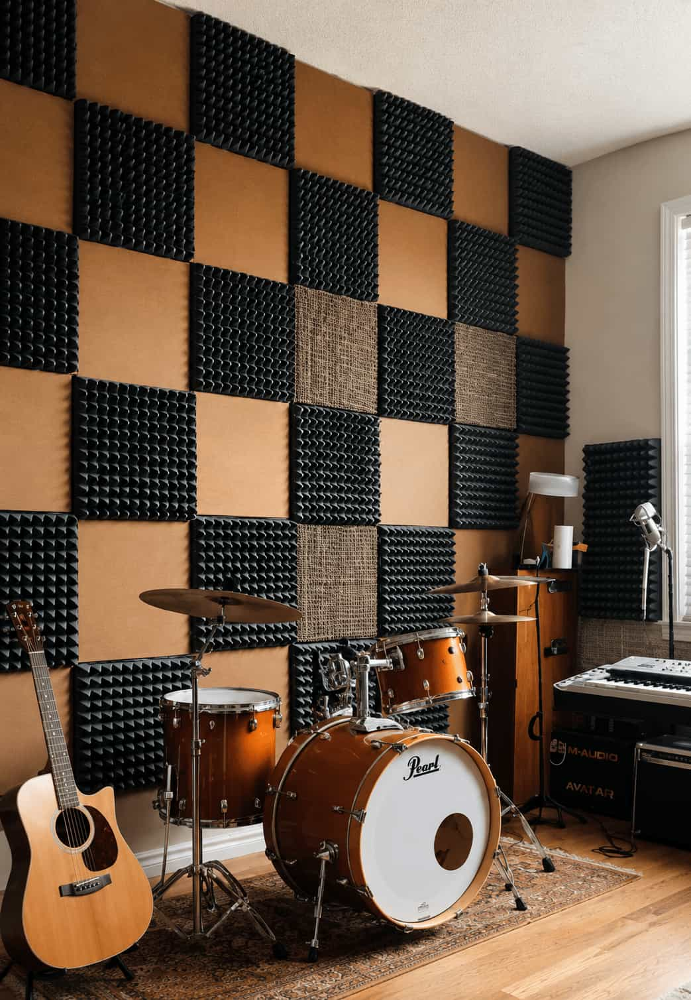
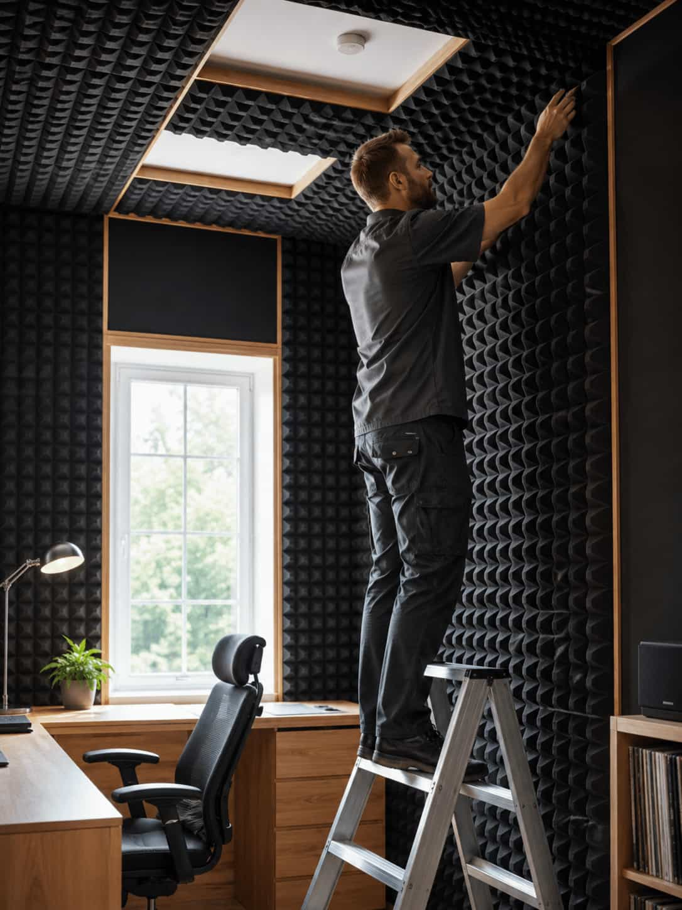
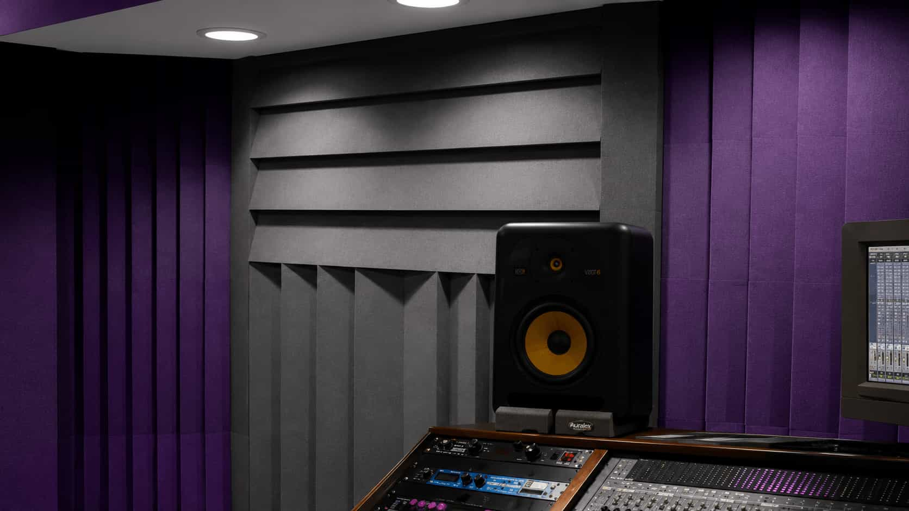

Purpose
Speech control, first reflections, rear-wall energy, ceiling reflections, bass treatment, and visual zoning require different approaches.
Plan panel purpose, thickness, air gaps, wall and ceiling zones, finishes, mounting, bass control, and visual integration around the actual room.

An acoustic panel should be considered as part of a room strategy rather than a decorative object with assumed performance.
Panel depth, core, covering, backing, air gap, dimensions, mounting, location, surface coverage, and tested assembly all influence how the product behaves.
Before choosing a style, define the room use, audible problem, priority frequency range, available wall or ceiling area, mounting limits, visual direction, safety requirements, and whether deeper low-frequency treatment is needed.
Speech control, first reflections, rear-wall energy, ceiling reflections, bass treatment, and visual zoning require different approaches.
Core density, thickness, frame, fabric, perforation, backing, cavity, edge detail, and mounting affect the complete assembly.
Colour, scale, rhythm, shape, seams, timber, lighting, furniture, and camera composition can be coordinated with acoustic priorities.
Thickness, density, and mounting depth influence how a panel behaves across different frequency ranges.
Placement matters more than pattern alone, especially at reflection points and other acoustically active zones.
Panels can support both acoustic goals and interior design when finish, colour, and proportion are chosen carefully.
Panel appearance, placement, thickness, mounting, and verified performance should be reviewed together rather than as separate product features.
Broadband treatment is commonly used for reflections across a useful range, but actual performance depends on the core, thickness, covering, mounting, air gap, and tested assembly.

Ceiling treatment can address strong overhead reflections where wall area is limited or the source, listener, microphone, and desk create an important vertical path.

Low-frequency control generally requires more depth and volume than thin surface treatment. Corners, boundaries, rear walls, ceilings, or purpose-built systems may be considered.

Slatted and perforated systems can provide a strong visual finish, but their acoustic behaviour varies with slat dimensions, spacing, backing, cavity, insulation, and complete tested build-up.
Movable treatment can support rented rooms, temporary recording areas, changing layouts, shared spaces, and situations where permanent mounting is restricted.
Thickness, construction and air gaps influence how a panel behaves across different frequencies.
Side walls, ceilings, rear boundaries and corners can require different treatment priorities.
Facing fabric, backing, frames and verified product information should be compared carefully.
Suitable coverage depends on room volume, intended use, furnishings and the problem being addressed.
Colours, textiles, timber and custom forms can support the wider interior composition.
Wall condition, panel weight, rental restrictions and ceiling installation affect suitable mounting.
Surface appearance is only one part of a panel. Review the complete product, mounting condition, tested data, installation, maintenance, and room purpose.
Acoustic panels vary in thickness, material, facing, backing, mounting method and tested performance. A visually similar product may behave differently depending on its construction and installation.
Suitable placement depends on room use, reflection zones, boundaries, furniture and available coverage. A successful layout balances acoustic priorities with colour, scale, finish and the wider interior composition.